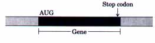

The study of gene structure and function has been greatly facilitated by recombinant DNA technology. The isolation of a gene from a large chromosome requires methods for cutting and joining DNA fragments, the availability of small DNA vectors that can replicate autonomously and into which the gene can be inserted, methods to introduce the vector with its foreign DNA into a cell in which it can be propagated to form clones, and methods to identify the cells containing the DNA of interest. Advances in this technology are revolutionizing many aspects of medicine, agriculture, and other industries.
The first organism used for DNA cloning was E. coli. Bacterial restriction endonucleases and DNA ligases provide the most important instruments for cutting DNA at specific sequences and joining DNA fragments. Bacterial cloning vectors include plasmids, bacteriophages, and cosmids. These permit the cloning of DNA fragments of dif ferent size ranges. In each case the vectors provide a replication origin for propagation in the bacterial host, and a selectable genetic element such as antibiotic resistance to facilitate the identification of cells harboring the recombinant vector. DNA is introduced into cells in viral vectors or by artificial methods that make the cell wall permeable.
The first step in cloning a gene is often the construction of a DNA library that includes fragments representing most of the genome of a given species.
The library can be limited to expressed genes by cloning only the complementary DNA copies of isolated mRNAs to make a cDNA library. A specific segment of DNA can be amplified and cloned using the polymerase chain reaction. Clones containing a specific gene in a large library can be detected by hybridization with a radioactive probe containing the complementary nucleotide sequence.
Expression vectors provide the DNA sequences required for transcription, translation, and regulation of cloned genes. They allow the production of large amounts of cloned proteins for research and commercial purposes. Cloned genes also can be altered by site-directed mutagenesis, which is useful in studies of protein structure and function.
Yeast is sometimes used for cloning eukaryotic DNA and it has many of the same advantages as E. coli. Methods for cloning in plants and animals are producing a variety of organisms with altered traits. Plants that are resistant to disease, insects, herbicides, and drought are being produced with the aid of a natural gene transfer process promoted by the Ti plasmid of the parasitic soil bacterium Agrobacterium tumefaciens. Engineered DNA can be introduced into animal cells by microinjection or retroviral vectors. Such procedures have produced mice with new inheritable genetic traits. The technology extends to humans, and human gene therapy is now directed at treating human genetic diseases.
General
Hackett, P.B., Fuchs, J.A., & Messing, J.W. (1988) An Introduction to Recombinant DNA Techniques, 2nd edn, The Benjamin/Cummings Publishing Company, Menlo Park, CA.
Jackson, D.A., Symons, R.H., & Berg, P. (1972) Biochemical method for inserting new genetic information into DNA of Simian Virus 40: circular 5V40 DNA molecules containing lambda phage genes and the galactose operon of Escherichia coli. Proc. Natl. Acad. Sci. USA 69, 2904-2909.
The first recombinant DNA experiment linking DNA from two different organisms.
Lobban, P.E. & Kaiser, A.D. (1973) Enzymatic end-to-end joining of DNA molecules. J. Mol. Biol. 78, 453-471.
Report of the first recombinant DNA experiment.
Sambrook, J., Fritsch, E.F., & Maniatis, T. (1989) Molecular Cloning: A Laboratory Manual, 2nd edn, Cold Spring Harbor Laboratory Press, Cold Spring Harbor, NY.
In addition to detailed protocols for a wide range of techniques, this three-uolume set includes much useful background information on the biological, chemical, and physical principles underlying each technique.
Libraries and Gene Isolation
Arnheim, N. & Levenson, C.H. (1990) Polymerase chain reaction. Chem. Eng. News 68 (October 1), 36-47.
A broad overuiew of the technique and applications.
Arnheim, N. & Erlich, H. (1992) Polymerase chain reaction strategy. Annu. Reu. Biochem. 61, 131156.
Erlich, H.A., Gelfand, D., & Sninsky, J.J. (1991) Recent advances in the polymerase chain reaction. Science 252, 1643-1651.
This issue of Science contains seueral other good articles on other aspects of biotechnology.
Neufeld, P.J. & Colman, N. (1990) When science takes the witness stand. Sci. Am. 262 (May), 4653.
Potential and problems of DNA fingerprinting.
Paabo, S., Higuchi, R.G., & Wilson, A.C. (1989) Ancient DNA and the polymerase chain reaction. The emerging field of molecular archaeology. J. Biol. Chem. 264, 9709-9712.
Southern, E.M. (1975) Detection of specific sequences among DNA fragments separated by gel electrophoresis. J. Mol. Biol. 98, 503-517.
The paper that introduced the Southern hybridization method.
Thornton, J.I. (1989) DNA profiling: new tool links evidence to suspects with high certainty. Chem. Eng. News 67 (November 20), 18-30.
Products of Recombinant DNA Technology Bailey, J.E. (1991) Toward a science of metabolic engineering. Science 252, 1668-1675.
An oueruiew of efforts to reengineer entire metabolic pathways in microorganisms for commercial purposes.
Bains, W. (1989) Disease, DNA and diagnosis. New Scientist 122 (May 6), 48-51.
Botstein, D. & Shortle, D. (1985) Strategies and applications of in uitro mutagenesis. Science 229, 1193-1201.
Buck, K. (1989) Brave new botany. New Scientist 122 (June 3), 50-55.
Prospects for genetic engineering in plants.
Culver, K.W., Osborne, W.R.A., Miller, A.D., Fleisher, T.A., Berger, M., Anderson, W.F., & Blaese, R.M. (1991)
Correction of ADA deficiency in human T lymphocytes using retroviral-mediated gene transfer. Transplant Proc. 23, 170-171. Gene therapy of adenosine deaminase deficiency.
Hooykaas, P.J.J. & Schilperoort, R.A. (1985) The Ti-plasmid of Agrobacterium tumefaciens: a natural genetic engineer. Trends Biochem. Sci. 10, 307309.
Johnson, I.S. (1983) Human insulin from recombinant DNA technology. Science 219, 632-637.
Koopman, P., Gubbay, J., Vivian, N., Goodfellow, P., & Lovell-Badge, R. (1991) Male development of chromosomally female mice transgenic for Sry. Nature 351, 117-121.
Recombinant DNA technology is used to demonstrate that a single gene directs the deuelopment of chromosomally female mice into males.
McLachlin, J.R., Cornetta, K., Eglitis, M.A., & Anderson, W.F. (1990) Retroviral-mediated gene transfer. Prog. Nucleic Acid Res. Mol. Biol. 38, 91135.
Murray, T.H. (1991) Ethical issues in human genome research. FASEB J. 5, 55-60.
This issue also contains a number of other useful papers on the human genome project.
Palmiter, R.D., Brinster, R.L., Hammer, R.E., Trumbauer, M.E., Rosenfeld, M.G., Birnberg, N.C., & Evans, R.M. (1982) Dramatic growth of mice that develop from eggs microinjected with metallothionein-growth hormone fusion genes. Nuture 300, 611-615.
A description of how to make giant mice.
Sulston, J., Du, Z., Thomas, K., Wilson, R., Hillier, L., Staden, R., Halloran, N., Green, P., Thierry-Mieg, J., Qiu, L., Dear, S., Coulson, A., Craxton, M., Durbin, R., Berks, M., Metzstein, M., Hawkins, T., Ainscough, R., & Waterston, R. (1992) The C. elegans genome sequencing project: a beginning. Nature 356, 37-41. A description of strategies being deueloped to sequence large genomes.
The telltale gene. Consumer Reports 55 (July 1990), 483-488.
A good summary of new genetic screening techniques based on recombinant DNA, with a focus on ethical dilemmas posed by the technology.
Thompson, J. & Donkersloot, J.A. (1992) N(Carboxyalkyl)amino acids: occurrence, synthesis, and functions. Annu. Rev. Biochem. 61, 517-557. A good summary of the structure and biological functions of opines.
Verma, I.M. (1990) Gene therapy. Sci. Am. 263 (November), 68-84.
Watson, J.D. (1990) The human genome project: past, present, and future. Science 248, 44-48. Weatherall, D.J. (1991) Gene therapy in perspective. Nature 349, 275-276.
Westphal, H. (1989)'lYansgenic mammals and biotechnology. FASEB J. 3, 117-120.
Zambryski, P., Tempe, J., & Schell, J. ( 1989 ) Transfer and function of T-DNA genes from Agrobacterium Ti and Ri plasmids in plants. Cell 56, 193-201.
1. Cloning
(a) Draw the structure of the end of a linear DNA fragment that was produced by an EcoRI restriction digest (include those sequences remaining from the EcoRI recognition sequence).
(b) Draw the structure resulting from the reaction of this end sequence with DNA polymerase I and the four deoxynucleoside triphosphates.
(c) Draw the sequence produced at the junction if two ends with the structure derived in (b) are ligated.
(d) Draw the structure produced if the structure derived in (a) is treated with a nuclease that degrades only single-stranded DNA.
(e) Draw the sequence of the junction produced if an end with structure (b) is ligated to an end with structure (d).
(f ) Draw the structure of the end of a linear DNA fragment that was produced by a PvuII restriction digest (as in (a)).
(g) Draw the sequence of the junction produced if an end with structure (b) is ligated to an end with structure (f).
(h) Suppose you can synthesize a short duplex DNA fragment with any sequence you desire. With such a synthetic fragment and the procedures described in (a) through (g), design a protocol that will remove an EcoRI restriction site from a DNA molecule and incorporate a new BamHI restriction site at approximately the same location. (Hint: See Fig. 28-3. )
(i) Design four different short synthetic DNA fragments that would permit ligation of structure (a) with a DNA fragment produced by a PstI restriction digest. In one of these synthetic fragments, design the sequence so that the final junction contains the recognition sequences for both EcoRI and PstI. In the second and third synthetic fragments, design the sequence so that the junction contains only the EcoRI or the PstI recognition sequence, respectively. Design the sequence of the fourth fragment so that neither the EcoRI nor the PstI sequence appears in the junction.
2. Selecting for Recombinant Plasmids When cloning a foreign DNA fragment into a plasmid it is often useful to insert the fragment at a site that interrupts a selectable marker (such as the tetracycline-resistance element of pBR322). The loss of function of the interrupted gene can be used to identify clones containing recombinant plasmids with foreign DNA. With a cosmid it is unnecessary to do this, yet one can easily distinguish cosmids that incorporate large foreign DNA fragments from those that do not. How are these recombinant cosmids identified?
3. DNA Cloning The plasmid cloning vector pBR322 (see Fig. 28-5) is cleaved with the restriction endonuclease EcoRI. An isolated DNA fragment from a eukaryotic genome (also produced by EcoRI cleavage) is added to the prepared vector and ligated. The mixture of ligated DNAs is then used to transform bacteria, and plasmid-containing bacteria are selected by growth in the presence of tetracycline. In addition to the desired recombinant plasmid, what other types of plasmids might be found among the transformed bacteria that are tetracycline resistant?
4. Expressing a Cloned Gene You have isolated a plant gene that encodes a protein in which you are interested. On the drawing below, indicate sequences or sites that you will need to get this gene transcribed, translated, and regulated in E. coli.

5. Identifying the Gene for a Protein with a Known Amino Acid Sequence Design a DNA probe that would allow you to identify the gene for a protein with the following amino-terminal amino acid sequence. The probe should be 18 to 20 nucleotides long, a size that provides adequate specificity if there is sufficient homology between the probe and the gene.
H3N-Ala-Pro-Met-Thr-Trp-Tyr-Cys-Met-Asp-Trp-Ile-
Ala-Gly-Gly-Pro-Trp-Phe-Arg-Lys-Asn-Thr-Lys-----
6. Cloning in Plants The strategy outlined in Figure 28-17 employs Agrobacterium containing two separate plasmids. Suggest a reason why the sequences on the two plasmids are not combined on one plasmid.
7. Cloning in Mammals The retroviral vectors described in Figure 28-20 make it possible to integrate foreign DNA efficiently into a mammalian genome. Explain how these vectors, which lack genes for replication and viral packaging (gag, pol, env), are assembled into infectious viral particles. Suggest why it is important that these vectors lack the replication and packaging genes.